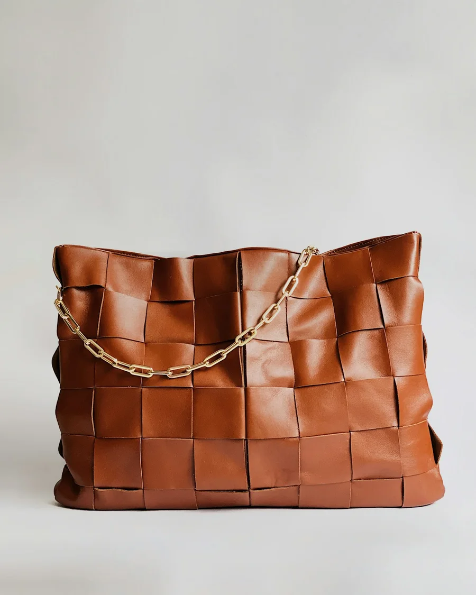

Pure White
Products & Resale · Clean white background, soft shadow, catalogue-ready.
Generating
- Compressing
- Uploading
- Generating46%
Usually 20–40 seconds. You can leave this page: it lands in Photos when it's done.
Done
Saved to Photos
Standard · 1024 px · 2 credits used. Made with free credits, so it's public with a watermark.
Make anotherFailed
Generation failed. Your credits were refunded.
Your photo and settings are kept. Try again, or change the photo.
 Your photo4:5 · as shot
Developing
Done
Not developed
Standard · 1024
Illustrative example
Your photo4:5 · as shot
Developing
Done
Not developed
Standard · 1024
Illustrative example
Template example: the phone photo on the left, the AI result on the right.
Your photo, as shot. The template keeps it and changes the light and background.
Phone photo → Pure White. Long-press to save on a phone.
Nothing was charged.